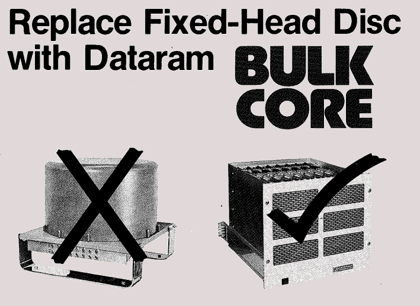
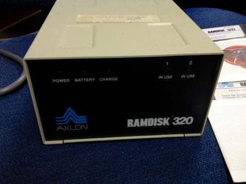
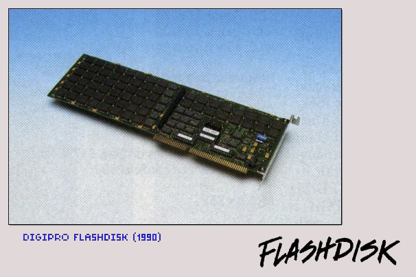

Альтернатива HDD
Первый SSD-накопитель создан компанией Dataram в 1976 году. Накопитель Dataram BulkCore состоял из шасси с восьмью планками RAM-памяти объемом 256 КиБ каждая. В сравнении с первым жестким диском, BulkCore был крошечным: 50,8 см в длину, 48,26 см в ширину и 40 см в высоту. При этом время доступа к данным в этой модели составило всего 750 нс, что 30000 раз быстрее, чем у самого современного на тот момент HDD-диска.

В 1978 году основана компания Shugart Technology, которая спустя год меняет свое название на Seagate Technology во избежание конфликтов с Shugart Associates. Через два года работы Seagate на свет появляется ST-506 — первый жесткий диск для персональных компьютеров в форм-факторе 5.25 дюйма и вместимостью 5 МиБ.
Помимо появления Shugart Technology, 1978 год запомнился выпуском первого Enterprise SSD от компании StorageTek. StorageTek STC 4305 вмещал 45 МиБ данных. Этот SSD разрабатывался как замена IBM 2305, имел схожие размеры и стоил невероятные 400 000$.
Выход на рынок персональных компьютеров

В 1982 году SSD приходит на рынок персональных компьютеров. Компания Axlon специально для Apple II разрабатывает SSD-диск на RAM-чипах под названием RAMDISK 320. Поскольку накопитель создавался на базе энергозависимой памяти, в комплекте поставлялся аккумулятор для поддержания сохранности информации. Емкости аккумулятора хватало на 3 часа автономной работы в случае потери электропитания.
Спустя год компания Rodime выпустит первый жесткий диск RO352 на 10 МиБ в привычном для современного пользователя форм-факторе 3.5 дюйма. Несмотря на то, что это первый коммерческий диск в таком форм-факторе, Rodime по сути не сделала ничего инновационного.
Первым продуктом в этом форм-факторе считается флоппи-дисковод, представленный компаниями Tandon и Shugart Associates. Более того, компании Seagate и MiniScribe договорились о принятии промышленного стандарта 3.5 дюйма, «оставив за бортом» Rodime, которую ждала судьба «патентного тролля» и полный выход из индустрии производства накопителей.
Создание Flash-памяти
В 1980 году, инженер Toshiba, профессор Фудзио Масуока, зарегистрировал патент на новый вид памяти, названный Flash-памятью типа NOR. Разработка заняла 4 года. NOR-память представляет собой классическую 2D матрицу проводников, в которой на пересечении строк и столбцов установлено по одной ячейке (аналог памяти на магнитных сердечниках).
В 1984 профессор Масуока рассказал о своем изобретении на конференции International Electronics Developers Meeting, где компания Intel быстро оценила перспективность данной разработки. Компания Toshiba, в которой работал профессор Масуока, не считала Flash-память чем-то особенным, а потому удовлетворила просьбу Intel сделать несколько опытных образцов для изучения.
Проявленный компанией Intel интерес к разработке Фудзио, подтолкнул Toshiba выделить пять инженеров в помощь профессору на решение проблемы коммерциализации изобретения. Intel, в свою очередь, бросил три сотни сотрудников на создание собственного варианта Flash-памяти.
Пока Intel и Toshiba вели разработки в области Flash-накопителей, в 1986 произошло два важных события. Во-первых, официально стандартизирован SCSI — набор соглашений для взаимодействия между компьютерами и периферийными устройствами. Во-вторых, разработан интерфейс AT Attachment (ATA), известный под брендовым названием Integrated Drive Electronics (IDE), благодаря которому контроллер диска переместился внутрь диска.
Три года Фудзио Маусока трудился над улучшением технологии Flash-памяти и к 1987 году разработал NAND-память. NAND-память — та же самая NOR-память, организованная в трехмерный массив. Основным отличием стало то, что алгоритм доступа к каждой ячейке стал сложнее, площадь ячеек стала меньше, а общая емкость значительно увеличилась.
Годом позже компания Intel разработала собственную Flash-память типа NOR, а компания Digipro сделала на ней накопитель под названием Flashdisk. Первая версия Flashdisk в максимальной комплектации вмещала 16 МиБ данных и стоила менее 500$
Создание накопителей на Flash-памяти

В конце 80-х и начале 90-х производители жестких дисков соревновались в уменьшении размеров дисков. В 1989 компания PrairieTek выпускает диск PrairieTek 220 на 20 МиБ в форм-факторе 2.5 дюйма. Спустя два года Integral Peripherals создает диск Integral Peripherals 1820 «Mustang» с тем же объемом, но уже 1.8 дюйма. Годом позже Hewlett-Packard сократила размер диска до 1.3 дюйма.
Компания Seagate хранила верность дискам в форм-факторе 3.5 дюйма и делала ставку на увеличение скорости вращения, выпустив в 1992 свою знаменитую модель Barracuda, первый жесткий диск со скоростью вращения шпинделя 7200 оборотов в минуту. Но на этом Seagate не собиралась останавливаться. В 1996 диски линейки Seagate Cheetah достигли скорости вращения 10000 оборотов в минуту, а через четыре года модификация Х15 раскручивалась аж до 15000 оборотов в минуту.
В 2000 году интерфейс ATA стал называться PATA. Виной тому стало появление интерфейса Serial ATA (SATA) с более компактными проводами, поддержкой «горячей замены» и повышенной скоростью передачи данных. Seagate и здесь взяла первенство, выпустив первый жесткий диск с таким интерфейсом в 2002.
Производство Flash-памяти изначально было очень дорогим, но в начале 2000-х стоимость резко снизилась. Этим воспользовалась компания Transcend, в 2003 выпустившая SSD-диски объемом от 16 до 512 МиБ. Через три года к массовому производству подключились компании Samsung и SanDisk. В этом же году IBM продает свое дисковое подразделение компании Hitachi.
Твердотельные накопители набирали обороты и возникла очевидная проблема: интерфейс SATA был медленнее, чем сами SSD-накопители. Для решения этой проблемы рабочая группа NVM Express Workgroup начала разработку NVMe — спецификацию на протоколы доступа к SSD напрямую по шине PCIe, минуя «посредника» в виде SATA-контроллера. Это бы позволило получать доступ к данным со скоростью шины PCIe. Через два года первая версия спецификации была готова, а еще через год появился первый NVMe-накопитель.
Различия между современными SSD и HDD
На физическом уровне разница между SSD и HDD легко заметна: в SSD отсутствуют механические элементы, а информация хранится в ячейках памяти. Отсутствие подвижных элементов приводит к быстрому доступу к данным в любом участке памяти, однако, существует ограничение на количество циклов перезаписи. Из-за ограниченного количества циклов перезаписи каждой ячейки памяти возникает необходимость в механизме балансировки — выравнивании изношенности ячеек путем переноса данных между ячейками. Эту работу выполняет контроллер диска.
Для проведения балансировки контроллеру SSD необходимо знать, какие ячейки заняты, а какие свободны. Запись данных в ячейку контроллер способен отследить сам, чего нельзя сказать об удалении. Как известно, операционные системы (ОС) не стирают данные с диска, когда пользователь удаляет файл, а помечают соответствующие участки памяти как свободные. Такое решение избавляет от необходимости ожидания дисковой операции при использовании HDD, но совершенно не подходит для работы SSD. Контроллер SSD-диска работает с байтами, а не с файловыми системами, и поэтому требует отдельного сообщения об удалении файла.
Так появилась команда TRIM (англ. — подрезать), с помощью которой ОС уведомляет контроллер SSD-диска об освобождении определенной области памяти. Команда TRIM необратимо стирает данные с диска. Не все операционные системы знают о необходимости отправлять эту команду твердотельным накопителям, а аппаратные RAID-контроллеры в режиме дисковых массивов никогда не отправляют TRIM дискам.